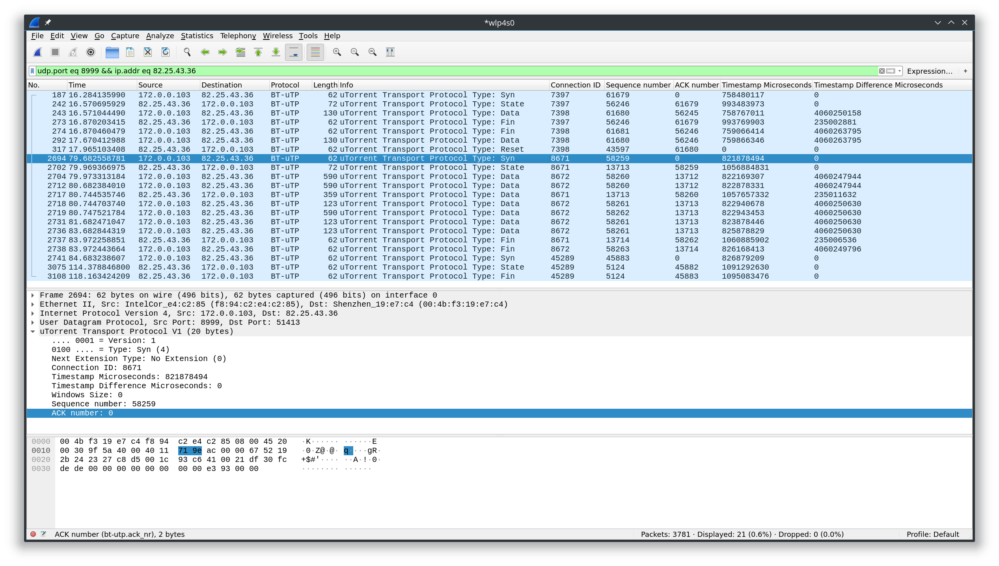

在 TCP 温故知新中回顾了 TCP，而这篇文章主要讲用于 BT 网络的基于 UDP 的运输层协议 µTP，同时顺便回顾 UDP。下面的内容更多是基于对 BEP29 的理解。
名字探究
µTP 的主要文档 BEP29 的创建于 2009 年，姑且认为这也是设计完成的大致时间，µTP 在 uTorrent 的 1.8 中首次加入（2009 年）这个事实也佐证了这点。它的设计者包括：
- Ludvig Strigeus（μTorrent 作者，BitTorrent 公司 2006 年收购 μTorrent，目前在 Spotify 工作）
- Greg Hazel
- Stanislav Shalunov（µTP 中的拥塞算法 LEDBAT 主要作者，后来还创造了可以脱离现有蜂窝网络使用的 IM 应用 FireChat —— 它被多次用到”占中”这样的公民运动中）
- Arvid Norberg（libtorrent 开发者，目前在 Blockstream 工作）
- Bram Cohen（BitTorrent 作者）
设计原因
在过去多年前，如果使用 BT 进行下载热门资源的话可以感受到到速度飞快，但是同时带来的问题就是如果想要同时看在线视频就会带来卡顿。问题在于 DSL 和 modem 的往往有一个和它们的发送速率不成比例的发送缓冲区，不成比例到可以容纳几秒钟的数据量。而 BT 往往会与许多 peer 建立 TCP 连接，在 TCP 将带宽均匀地分配到每个连接的前提下，BT 就占用了较多的带宽，但是其他诸如浏览网页、即时通讯这些场景的优先级实际上应该要比 BT 传输更高些，但是因为 BT 和 物理层的这种特性导致了其他服务有延迟，影响了使用 BT 时其他服务的体验。
µTP 通过将 modem 的缓冲队列的大小作为一个控制因子来调整发送速率，当队列过大时，将会放慢发送速度。这种策略使得 BT 在没有竞争的情况下可以充分利用上传带宽，在有大量其他流量的情况下则放慢发送速率。
上述时 Bittorrent 文档中的说法，但是实际上 µTP 是基于包的延时的，而不是基于队列大小的。而且 µTP 具体对拥塞算法 LEDBAT 的实现有与在 IETF 互联网草案 RFC 6817 中的描述有所区别（这里的实现指 C++ 版本的 libutp，各个版本的实现不完全一致）。
UDP 和 µTP 首部
为了方便与 TCP 做简单的对比，把 UDP 的首部（前四个字节）与 µTP 的首部（剩余部分）放在了一个图中示意。从 UDP 首部字段数量皆可以发现 UDP 协议相对 TCP 协议是如此简单，以至于我们w可以将 TCP 协议看成是类似 µTP 协议一样的基于 UDP 协议的运输层协议。
UDP 首部
- 源 / 目端口（Source / Destination port）：用于确认通信进程双方。源端口是可选的，如果设置了源端口，则接收方将其视为回复端口。如果不需要回复就不需要设置；
- 总长度（Length）：定义了 UDP 用户数据报的总长度，包括首部和数据。TCP 首部中是没有所谓“报文段总长度”的字段的，长度可以通过 IP 层的长度减去 IP 首部长度计算所得，所以一定程度上时冗余的，可以参考 Stack OverFlow 上的相关讨论；
- 校验和（Checksum）：用于对整个用户数据报的校验，通过 IP 位首部与和用户数据报计算得到；
可见 UDP 首部的这些字段在理论上可以是 TCP 首部字段的子集。因此我们可以粗略地讲 TCP 是基于 UDP 的传输层协议。
UDP 服务是一个“尽力而为”的服务，它没有流量控制，只能通过校验和进行差错控制，丢包不会知晓，也不会重传，也没有拥塞控制。
µTP 首部
- version：版本号，现在为 1，还有一个原始版本号 0 存在
- connection_id：用于标记连接。这个字段是必须的么?；
- timestamp_microseconds：发送数据包的时间，和计算延迟时间，rtt 相关；
- timestamp_difference_microseconds：当前时间和上一次收到的包中的 timestamp_microseconds 之差；
- wnd_size：表示另一端建议的窗口大小，相当于 TCP 中的接收窗口；
- extension：代表第一个扩展的类型，0 表示没有扩展，1 表示 Selective ACKs（选择确认扩展）。
- type：数据包的类型。可以有：
- ST_DATA = 0：承载有效数据的数据包；
- ST_FIN = 1：终止连接。是通信单方发送的最后一个包，类似于 TCP 的 FIN 标记。但是发送 ST_FIN 的一方还是会等待可能丢失或者失序到达的包，即使收到了对方的 ST_FIN 包；
- ST_STATE = 2：用于报告状态，传输一个没有数据的 ACK。和 TCP 中未携带数据的 ACK 包一样，它不消耗序号；
- ST_RESET = 3：强制重置连接。类似 TCP 的 RST 标记。
- ST_SYN = 4：发起连接。类似 TCP 的 SYN 标记。发起方会随机一个 connection_id ID 用于给接收方后续的回复使用。然后发起方之后的包中传输的 connection_id 为 ID + 1；
- seq_nr：表示这个数据包的序号。注意和 TCP 中代表字号号的序号有所不同。初始序号同样也是随机生成。
- ack_nr：表示最后收到的数据包的seq_nr；
连接过程
图示为一次在 qBittorrent 中对一个种子开始 BT 下载二十秒左右后停止下载时，与其中一个 peer 的交互过程。

丢包
和丢包处理有一个和窗口相关的变量需要先进行说明：
- max_window：定义了未被确认的字节的上限，相当与 TCP 中的拥塞窗口；
- wnd_size：同首部中的 wnd_size，和 TCP 中相同，实际的发送窗口大小为
min(max_windows, wnd_size)； - cur_window：表示当前未被确认的字节的数量；
当需要发送数据包时，仅当 cur_window + packet_size <= min(max_windows, wnd_size) 成立，这个数据包才能被发送。
- 当序号为
seq_nr - cur_window的数据包（发送队列中年龄最大的未被确认的数据包，下一个理论上需要被确认的就是它）没有被确认，但是已经有至少三个序号大于它的数据包通过 Selective ACK 被确认，那么这个数据包被认为是丢失了。 - 如果
ack_nr + 1这个包已经发送了，而收到三个重复的ack_nr的 ACK，那么ack_nr + 1这个包被认为是丢失了。
如果检测到丢包，那么拥塞窗口 max_window 大小减半。
超时
µTP 的超时计时和 TCP 中 RTO 计时器不太一样，RTO 计时器主要用于对 ACK 的计时，但是 µTP 的计时器则是指接收任何数据包超时时间，如果超时时间内没有任何数据包到达则超时，如果超时，则 packet_size 和 max_window 将都会被设置为最小数据包大小（150 字节）。 （疑问？：packet_size 的调整策略是什么）
超时时间的计算
每当收到一个数据包的 ACK，就会更新往返时间（不考虑重传的包），往返时间用于计算超时时间。先说明下相关的变量：
- rtt：往返时间；
- rtt_var：往返时间差异；
- packet_rtt：当前收到 ACK 对应的包的往返时间，即当前时间减去这个包发送时的时间，即首部中的 timestamp 字段记录的值。
- timeout：超时时间；
通过以下公式更新 rtt：
1 | delta = rtt - packet_rtt |
正常情况下通过 rtt 计算得到 timeout（第一次由于没有 rtt，timeout 使用初始值 1000 ms，）：
1 | timeout = max(rtt + rtt_var * 4, 500); |
如果遇到超时，则 timeout 翻倍。
拥塞控制
在丢包和超时部分已经涉及到拥塞窗口的调整了。µTP 的拥塞控制可以理解为一种基于延迟的负反馈拥塞控制，通过延迟的变化控制窗口大小的变化，达到拥塞控制目的。计算窗口大小过程中的相关常量和变量的定义如下：
- CONTROL_TARGET：µTP 所能接收的上行缓冲延迟，现在是 100 ms；
- base_delay：两分钟内的收到的数据包的最低延迟；
- our_delay：当前的数据包延迟；
- off_target：实际延迟和目标延迟的差距。即
CONTROL_TARGET - our_delay； - outstanding_packet：已经被发送但是未被确认的数据包；
具体计算过程如下：
1 | delay_factor = off_target / CCONTROL_TARGET; |
当 off_target > 0 时，当前包的延迟时间比设定的还小一些，那么窗口会缩小，发送速率就会放慢；反之，窗口增加，速率加快。